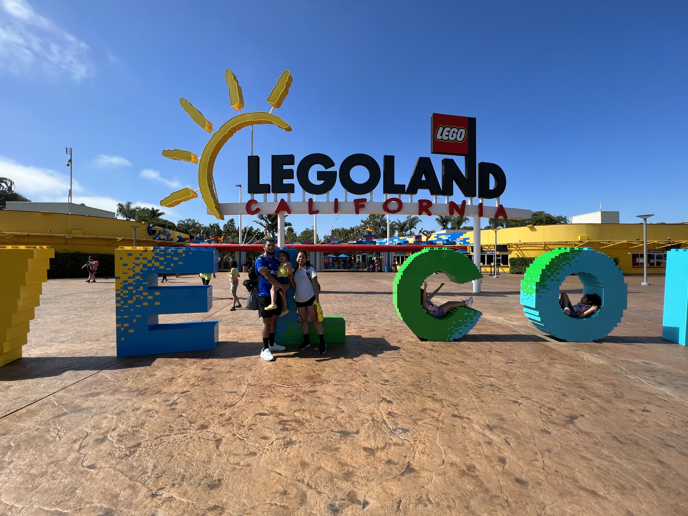

One of the things I enjoy the most is exploring new places with my daughter. We have
had the opportunity to go to Legoland California Resort, visit aquariums such as Sea Life, watch Disney on Ice,
and so many more things! I hope to give her many more adventures throughout her childhood so she can look back at
these memories one day!

Another one of my favorite hobbies is going to the gym early in the morning! I have been going to
the gym since I was 16 years old. I typically workout 4-5 times a week. I like to
lift heavy weights and enjoy increasing my personal records. Feeling sore makes me feel at my best!
I plan on continuing to workout as long as my body allows me to!

Reading books is also a hobby of mine. I like mystery and horror books because of the intensity I feel when I read them!
I also like autobiographies of people who become successful whether it be emotional, financial, or
spiritual, after having struggled in the past. These types of books are very motivational
and encouraging to me! They inspire me to become succesful as well.